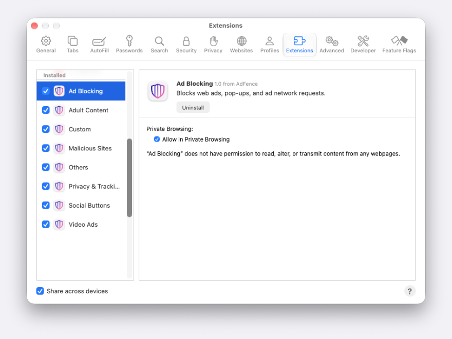

如果你在 iPhone 上设置过，路径很熟悉：设置 → App → Safari 浏览器 → 扩展。 Mac 在「设置」App 里没有对应的步骤。Safari 有自己的一套偏好设置，哪些扩展运行，全都在 Safari 里面决定。AdFence App 是另一个地方，它装着决定过滤什么的那组开关。
这种分工，是 Mac 上最常见的「App 装了、看着也没问题、广告却一个不少」的原因。扩展没有 被勾选之前，Safari 什么都不会运行；勾选之后，App 里自己的开关不打开，过滤内容也不会 有任何变化。
简单说：在 Safari 里打开 Safari → 设置（⌘,），在 扩展标签页勾选 AdFence。然后打开 AdFence App，留在 General 标签页，确认 Blocking 和你想启用的规则都 已打开。刷新页面。
1. 在 Safari 里打开扩展
- 在 Safari 里，从菜单栏选择 Safari → 设置（⌘,）。
- 打开 扩展标签页。
- 在左侧列表中勾选 AdFence。八个扩展是分开的条目，各自有独立的 勾选框。
- 如果你用无痕窗口浏览，为需要在那里生效的扩展勾选 在无痕浏览中允许。

右侧那行说明值得读一遍：内容拦截器「无权读取、修改或传输任何网页内容」。这不是报错。 扩展提供规则列表，由 Safari 来执行。这类拦截器就是这样工作的，也是它不需要你的浏览记录 的原因。
2. 在 App 里决定过滤什么
打开 AdFence，留在 General 标签页。顶部的 Blocking 是总开关；下面的 Blocking List 装着规则 —— Block Ads、Bypass Anti-Adblock、Safe Browsing、Block Trackers —— 再往下的 Other Settings 装着页面级的那一组，从 Cookie 提示到弹窗和评论。只有打开的才会被过滤。

顺序很重要。App 写规则，Safari 执行规则，所以改过开关之后，回到 Safari 刷新页面 —— 已经加载的页面会保留改动前取到的内容。
Mac 上的按站点控制
在全局开关之上还有两套机制，它们很容易混淆。
- 在 App 里：针对某个地址的 Site Settings，用 Pause Blocking 对该站点整体退让，用 Site Overrides 放行单个过滤器。条目会收集在 Custom 标签页。
- 在 Safari 里：可以从重新加载按钮的菜单里选择不启用内容拦截器来 重新载入页面。这是临时的，只对当前标签页有效 —— 下一次重新加载，拦截器就回来了。
前者是持久的；后者是应急出口。如果你发现自己经常对同一个站点用后者，前者才是更合适的 工具。
和 iPhone 有什么不同
- 路径：Mac 上是 Safari → 设置 → 扩展，不是 设置 → App → Safari 浏览器。没有系统「设置」这一步。
- 设备：扩展按设备启用。Mac 和 iPhone 各自需要勾选一次；之后各自 保留自己的开关。
- 浏览器：Safari 扩展只在 Safari 里运行。在 Mac 上很容易在 Chrome 或 Firefox 里看一眼就断定拦截器坏了 —— 它在那些浏览器里从未生效过。
Mac 上广告还在的话
按顺序检查 —— 前两项能解决大多数情况：
- 扩展被勾选了。 再打开一次 Safari 的扩展标签页；更新和迁移 Mac 都可能 让它变成未勾选。
- 总开关是开着的。 App 里的 Blocking 必须打开；它关着 时，所有扩展加载的都是空规则列表。
- 站点没有被暂停。 看看 App 里的 Custom 标签页。
- 你看的是那个对的浏览器。 Chrome 或 Firefox 里的广告是另一个程序的 事，不是设置问题。
- 这条广告是内容拦截器够不到的。 YouTube 视频内广告，以及在别的 App 内置浏览器里打开的链接，是常见的两种情况。
如果页面是别的地方不对劲 —— 播放器起不来、表单提交不了 —— 先考虑按站点的工具，而不是 动全局设置。如果扩展本身看起来有问题，30 秒检查写在这 篇文章里。
常见问题
Mac 和 iPhone 上都需要装这个 App 吗？
扩展按设备启用，所以 Mac 需要装好 App，并在 Safari 里勾选一次扩展。iPad 也一样。 之后每台设备各保留自己的开关。
Mac 上的 Chrome 或 Firefox 也会被拦截吗？
不会。Safari 扩展只在 Safari 里运行，所以 AdFence 在 Mac 的 Chrome、Firefox 或 任何其他浏览器里都不起作用。那些浏览器需要各自的拦截器。
Mac 的无痕浏览窗口里也生效吗？
只有扩展被允许时才生效。在 Safari 的扩展设置里选中 AdFence，为你希望在无痕窗口 中生效的每个扩展打开 在无痕浏览中允许。
Safari 说扩展无权读取网页，这正常吗？
正常。内容拦截器提供规则列表，由 Safari 自己执行；它不读取、不修改、也不传输 页面内容。扩展面板里的那句话是在说明技术原理，不是报错。
为什么 Mac 上某一个网站还有广告？
在 Site Settings 里检查这个网站：如果它因为任何原因被暂停过， 就会一直暂停，直到你删除。视频流里的广告和别的 App 浏览器里的广告是另外两种情况， 任何 Safari 内容拦截器都够不到。